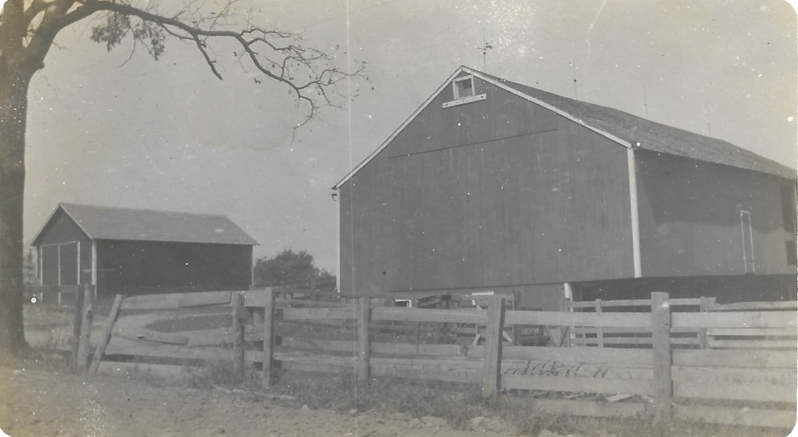

House-Circa 1912
Family History
In 1819, George Pore (aka Poor or Pohr), traveled to the land office in Steubenville, Ohio. On October 20, 1819 he signed a land patent for 160 acres in the northwest corner of section 3, township 17, range 6 for assumed price of $320. Sometime between 1824-1827, the Pore’s migrated from Westmoreland County in Pennsylvania to the farm near Paris, Ohio in Stark County.
On December 12, 1833, George’s daughter, Elizabeth married a gentleman by the name of Phillip Walker, Dan’s 3rd great grandfather. In the early 1820’s, Phillip had also migrated to the Paris area from Shanksville, Pennsylvania. The newly weds settled on the farm and started a family. Following George’s death and an inheritance dispute, Phillip and Elizabeth purchased 80 acres on the eastern half of the farm from Christopher Pore, a son of George’s for $1500 in Oct. 1843. In the year prior to this purchase, they built the house and barn that are still standing and in use today on the farm.
Phillip farmed until his death in 1898. During that time, he had remarried twice and had 10 children. In October 1899, his son Jacob H. Walker from his second marriage (Dan’s great-great grandfather) inherited and/or purchased from his siblings these 80 acres for $4000.

Barn-circa 1912
During his lifetime, Jacob married twice (Clara Mong and Cordelia Snyder) and had 4 children. Like his father, he farmed until his death in 1928. At that time, his sons Homer and Lloyd inherited the farm and in turn Homer sold his share to Lloyd for $1700 in August 1928.
Lloyd married Mabel Vandegrift (Dan’s great grandparents) and they had 4 children that they raised on the farm like the generations before them. Lloyd farmed until his death in 1991 at which time Mabel and his son Olen (Dan’s grandpa), took over. Mabel maintained ownership of the farm until her death in 2008 and then Olen purchased his siblings’ shares of the inheritance to keep the farm together. With the exception of approximately 3 acres that were deeded off for houses for 2 of Lloyd’s children, 77 acres continue today as part of the original farm.
In 2002, Dan and Sonia began the process of taking over the management and ownership of the farm from Olen. With the assistance of our now teenage children, Leeann, Payton, and Andrew, we are still running the farm today.
What we do
The farm has seen many changes in its 200 year history.
Originally, XXXX
In the 1950’s with the regulations changing in handling and storing milk, Lloyd made the decision to stop milking dairy cows on the farm. For a brief period, Lloyd and his family tried raising pigs before finally purchasing the farm’s first Angus cattle in 1959.
Today, we continue to maintain the beef cattle herd. The herd is still primarily Black Angus. With our children taking an interest in the cattle, they had started their own herds that consist of Red Angus, Maine, and Simmental. Majority of the cattle are either finished out for beef or sold off as feeder calves. In recent years, we started expanding into raising show cows.